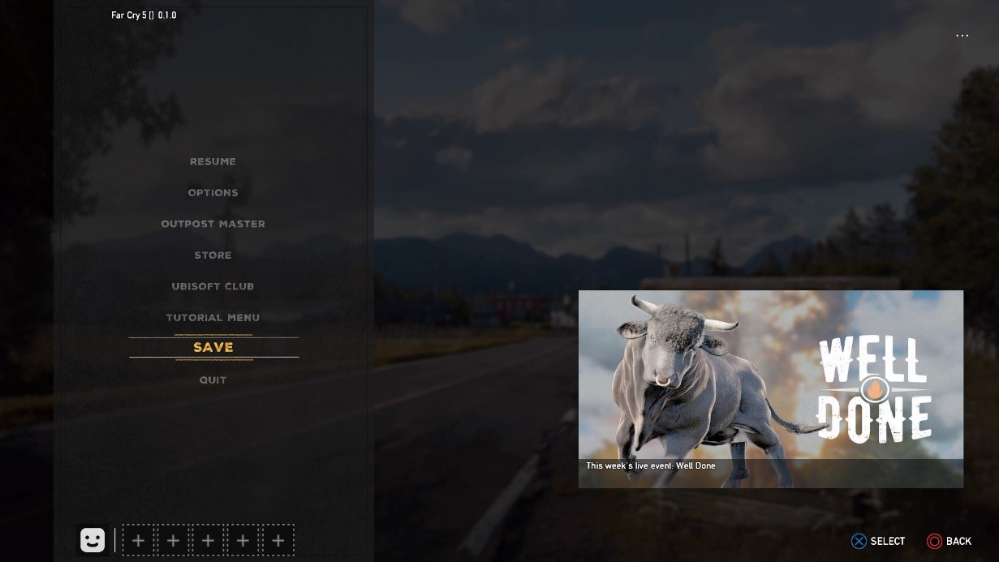

These are some of my usability reviews of games. I've started writing these for practice and for the purpose of developing a more more critical mindset towards the games I play. I'm still new to these, so enough practice will eventually result in better, incisive reviews.
Far Cry 5 is Ubisoft Montreal and Ubisoft Toronto’s newest entry in the Far Cry series, released on March 27, 2018. I played this from March 29th to April 6th for this review. I’ll be looking at some usability issues that Far Cry 5 has, some of them quite unusual. I played this on the PS4. I’ll be listing each issue as either Severe, Major, or Minor. I've also written my suggested fixes in blue.
The game is composed of 3 different regions controlled by different cult leaders. I’ve played up to the point where I’ve ‘beaten’ one region, meaning beaten the boss of that region, not necessarily having done all the side or main tasks.
- Saving the game (Minor)  Far Cry 5’s saving state is difficult to notice unless you know exactly what you’re looking for. It doesn’t help that you can mash the save button over and over as well, making players think the save feature isn’t working. The picture above is a screenshot taken a second after hitting save. Players are meant to infer that the game is saving by the 3 white dots in the corner. It’s frustratingly obscure and when new players don’t realize how often the game autosaves, becomes an important issue to address. This is less of an issue later on, when players learn to recognize that it’s saved, and because of the number of moments the game autosaves at. I can understand the minimalist design that was chosen for this, and I actually preferred how this was done compared to traditional displays, but I think it’s important to at least show players when they save for the first time, through a pop-up that explains what’s happening. It keeps the save as efficient as it is but removes confusion.